選屋
約 8 分鐘
高雄車位值多少錢？4,354 筆實價登錄的平面與機械價差
仲介說「車位大概兩百萬」，但那是平面還是機械？用內政部實價登錄有單獨揭露車位價的 4,354 筆高雄成交統計：一般住家規模的坡道平面車位中位數 195 萬，坡道機械只有 100 萬，差 1.9 倍。車位占總價的中位數是 12%。另外有近四成的車位沒有單獨揭露價格，直接被包進總價裡。
閱讀全文 →買房、賣房、換屋最常卡住的幾個問題，我們用自己整理的實價登錄資料回答—— 255 個社區、26,276 筆成交。內容會隨法規與市場變動更新，發布日期標在每篇文章上。 要賣房的話，下面的「賣房」分類有訂價、稅費與委託簽約的完整說明。
仲介說「車位大概兩百萬」，但那是平面還是機械？用內政部實價登錄有單獨揭露車位價的 4,354 筆高雄成交統計：一般住家規模的坡道平面車位中位數 195 萬，坡道機械只有 100 萬，差 1.9 倍。車位占總價的中位數是 12%。另外有近四成的車位沒有單獨揭露價格，直接被包進總價裡。
閱讀全文 →
2026 年 9 月 18 日起，自然人第 2 戶購屋貸款成數上限由 6 成調升為 7 成，但仍不得有寬限期。以高雄四個生活圈的實際成交中位總價試算，自備款可以少準備 126 萬到 170 萬元。換屋自住者另有 18 個月切結的協處措施，可同時不受成數上限與寬限期限制。
閱讀全文 →
高雄四大生活圈 229 個社區的公設比中位數是 30.56%，一半的社區落在 28.71% 到 34.63% 之間。最低 14.03%、最高 47.65%。公設比高低主要由完工年代決定，不是建商佛心與否。本文附四個生活圈與各年代的實際分布。
閱讀全文 →
瑞豐・巨蛋的住家成交單價中位數 30.0 萬／坪，與農十六並列高雄四大生活圈最低；公設比中位數 28.44% 是四區最低。總價中位 1,322 萬比農十六的 1,219 萬高，差別不在單價，而在坪數——這一區的成交坪數中位數 47.9 坪，農十六只有 40.2 坪。本文用逐筆實價登錄拆解這一區的行情、屋齡結構、路段與學區。
閱讀全文 →
用本站 255 個社區、2020 年起 12,029 筆實價登錄成交統計：1990 年代完工的社區單價中位數 21.0 萬／坪，2020–2024 年完工的是 36.0 萬，2025 年後交屋的新案是 47.5 萬。單看美術館特區，2025 年後的新案比 2000 年代初的社區貴了九成。本文拆解這個溢價合不合理、以及預算固定時該怎麼選。
閱讀全文 →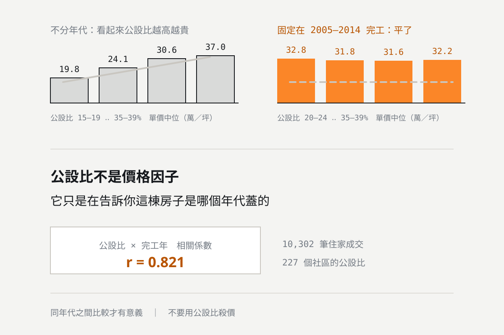
表面上看，公設比越高的社區成交單價越高——35–39% 這一組中位數 37.0 萬／坪，25–29% 只有 27.8 萬。但把完工年代固定住重算，價差完全消失，2020 年代甚至反向。公設比與完工年的相關係數高達 0.823，它不是價格因子，而是年代的代理變數。
閱讀全文 →
實價登錄是公開資料，但直接拿來比價很容易算錯。本文整理我們整理 255 個社區、26,276 筆成交時實際踩過的七個坑：門牌怎麼確認是同一棟、店面會把行情拉高一倍、單價其實已經扣過車位、解約紀錄要排除、全形數字、小樣本、預售與成屋不能混。
閱讀全文 →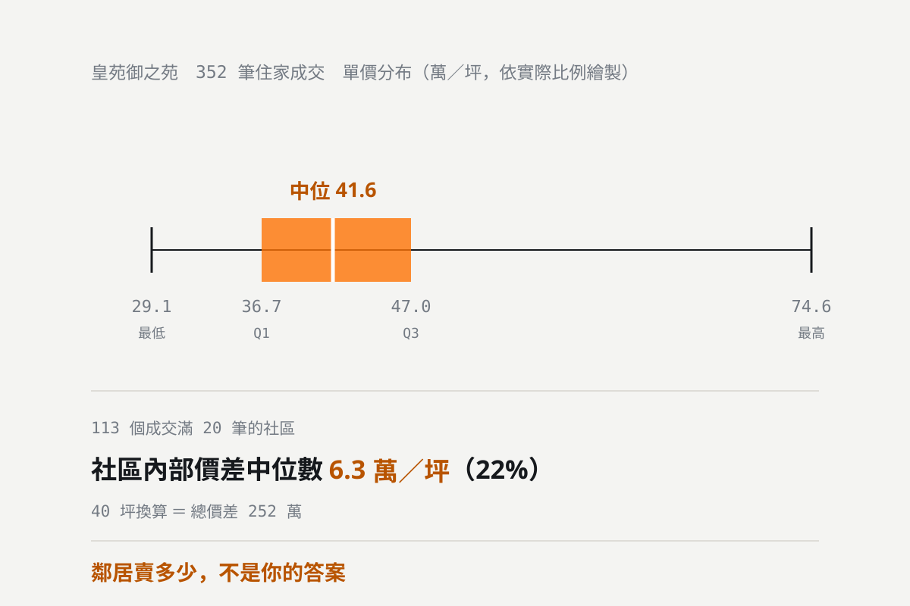
本站 157 個成交滿 20 筆的高雄社區統計：同一個社區內部，成交單價的 Q1 到 Q3 區間上下差距中位數是 8.6 萬元／坪，相當於社區單價中位數的 31%。一間 40 坪的房子，這就是 344 萬的總價差。本文說明這個價差從哪裡來，以及怎麼在同社區的成交裡篩出真正可比的那幾筆。
閱讀全文 →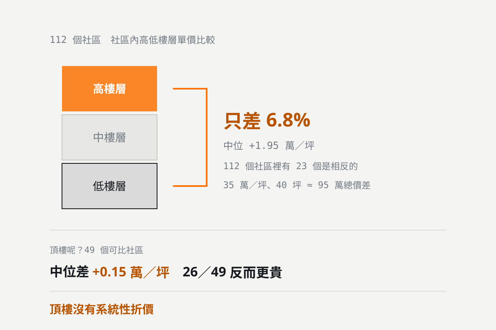
用本站 154 個可配對的高雄社區統計：同一個社區內，高樓層（最上三分之一）的成交單價中位數比低樓層（最下三分之一）高 2.13 萬元／坪，約 6.7%。154 個社區中有 104 個是高樓層較貴，但也有 50 個相反。頂樓更沒有系統性折價。本文說明這個數字怎麼用、以及為什麼不能直接套用在你的社區。
閱讀全文 →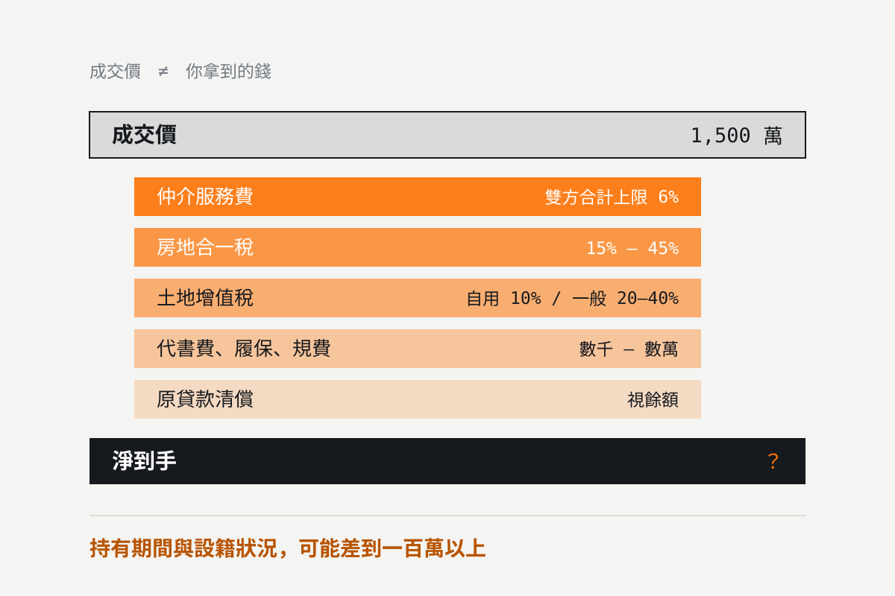
成交價不是你拿到的錢。賣方要負擔仲介服務費（買賣雙方合計上限為成交價 6%）、房地合一稅、土地增值稅、代書費與貸款清償。本文用一間 1,500 萬的房子逐項拆解，並說明自住優惠與重購退稅怎麼把稅額壓下來。
閱讀全文 →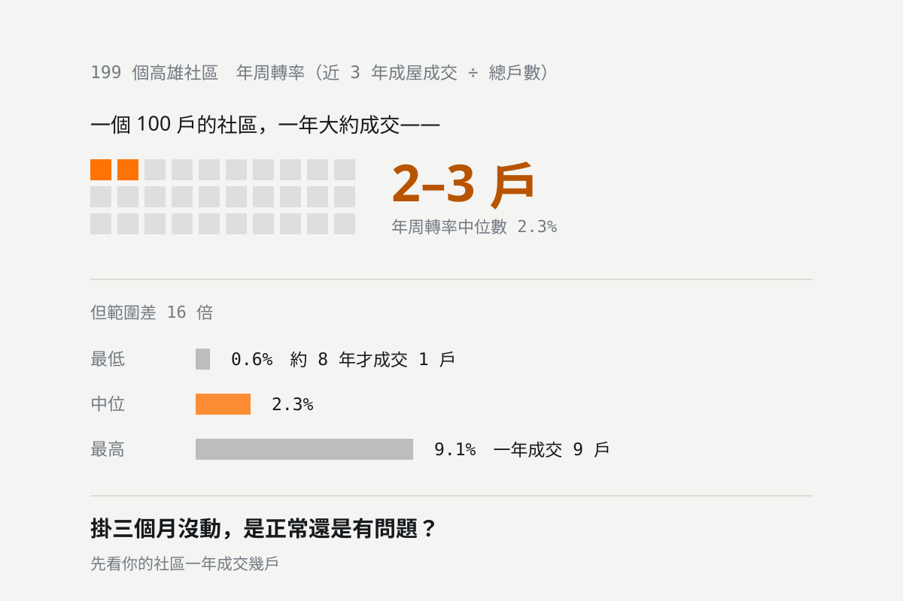
屋主最常問「我的房子好不好賣」，但很少人去量。用本站 199 個社區的成交資料算出年周轉率：中位數 2.3%，也就是一個 100 戶的社區一年大約成交 2 到 3 戶。範圍從 0.6% 到 9.1%，差距 16 倍。知道自己社區的數字，才知道「掛三個月沒動」是正常還是有問題。
閱讀全文 →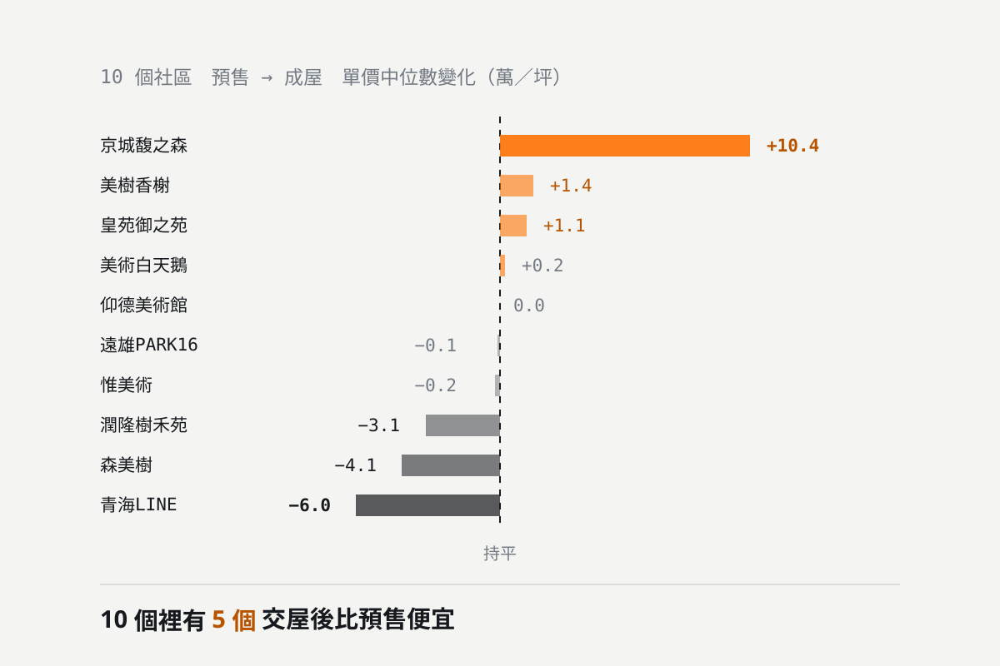
用本站 10 個同時有預售與成屋成交的高雄社區對照：成屋單價減預售單價的中位差是 −0.05 萬元／坪，等於零。但個別社區差很多，從 −6.0 到 +10.4 萬元／坪都有。「預售買了交屋就賺」不是通則，是運氣。
閱讀全文 →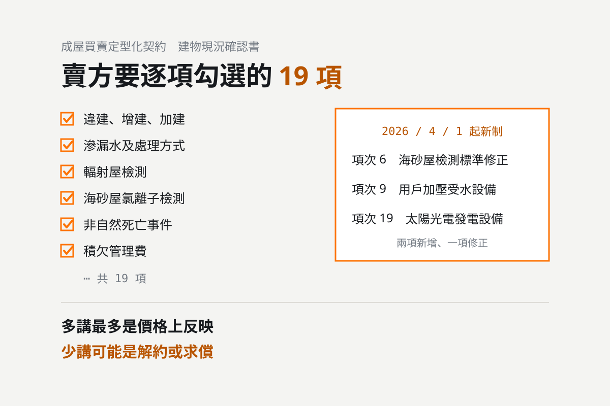
賣房最容易出事的不是價格，是該講沒講。成屋買賣定型化契約的「建物現況確認書」共 19 項，從違建、滲漏水、海砂屋到非自然身故都要逐項勾選。2026 年 4 月 1 日起新增太陽光電設備與用戶加壓受水設備的揭露，海砂屋檢測標準也改了。本文逐項說明。
閱讀全文 →
專任委託的核心差別只有一句話：委託期間內，你不能自己賣，也不能另外委託別家。依內政部契約書範本，違反時視為受託人已完成仲介義務，服務報酬要一次全額付清。本文說明兩種委託的實際差異、各適合什麼情況，以及簽約前必須確認的條款。
閱讀全文 →
學區可以是購屋的重要考量，但生活圈名稱不等於正式學區，買房也不等於取得學位。先確認孩子的入學資格，再比較住宅與預算。
閱讀全文 →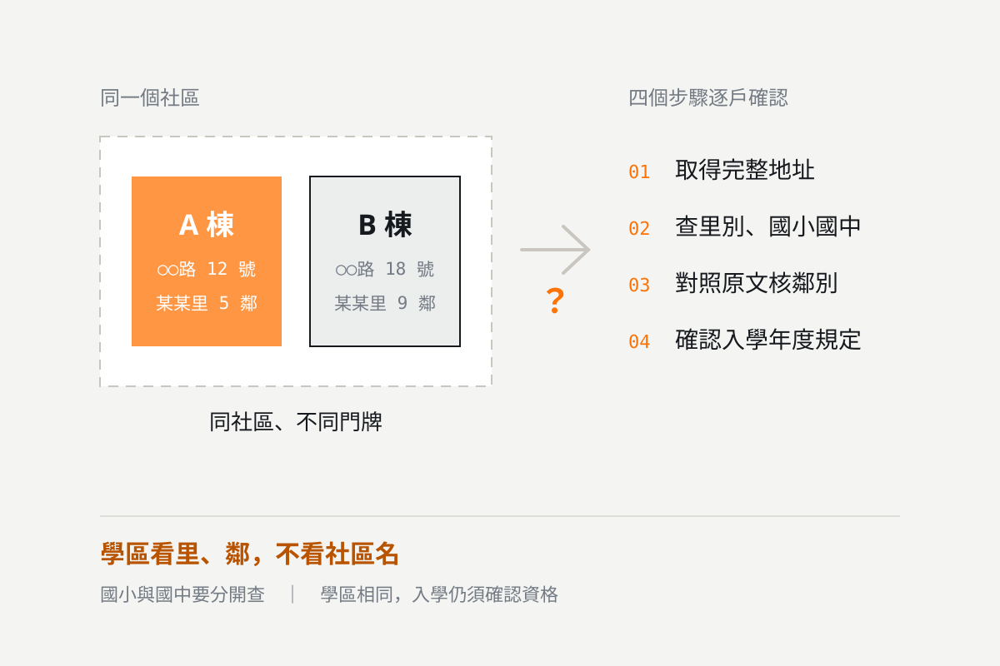
有可能，但門牌不同不代表學區一定不同。高雄的國小、國中學區須依當年度公告，核對實際地址所屬的里、鄰；即使學區相同，入學結果仍可能因總量管制與個別資格而不同。本文提供可操作的四步驟查核方法。
閱讀全文 →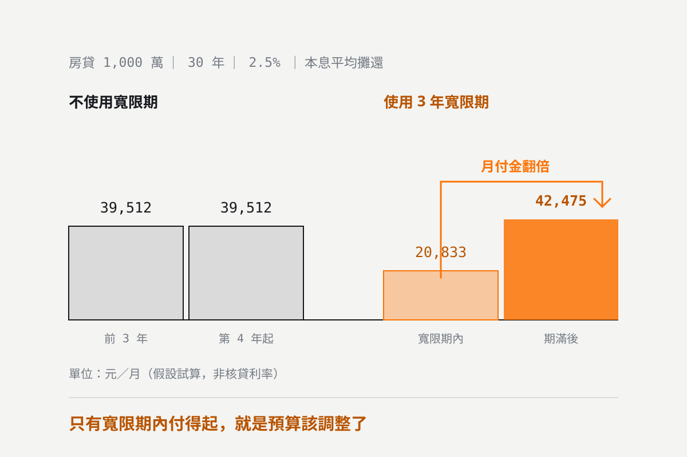
寬限期內較低的月付金，不等於長期購屋負擔。當客戶只有寬限期內的月付金負擔得起，或必須依靠未確定的加薪、售屋、轉貸才能支付期滿後房貸時，我們會建議先不要使用寬限期，並重新評估購屋預算。本文附 1,000 萬元 30 年的實算對照與 3 項壓力測試。
閱讀全文 →美術館特區現在一坪多少？綠地、學區與生活機能各自的優勢在哪？這篇整理近一年實價登錄行情、區內主要社區與建案分布，並說明選屋時最容易被忽略的棟距、車位與公設條件。
閱讀全文 →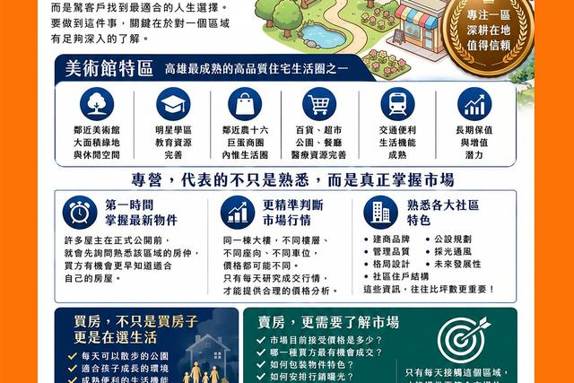
澄果團隊深耕高雄美術館特區十年以上，每天走同一個區域、看同一批社區。這篇說明為什麼專營一區能給出更準的訂價與更快的成交，以及我們如何用實價登錄逐筆比對，而不是報一個籠統的價格。
閱讀全文 →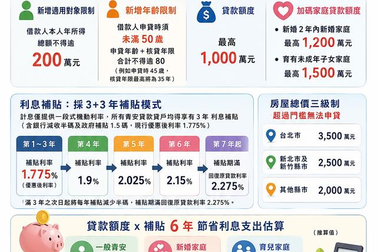
額度依家庭狀況最高拉到 1,500 萬，同時新增所得排富、房屋總價上限與年齡限制，並改為一生限貸一次。先確認自己過不過得了門檻。
閱讀全文 →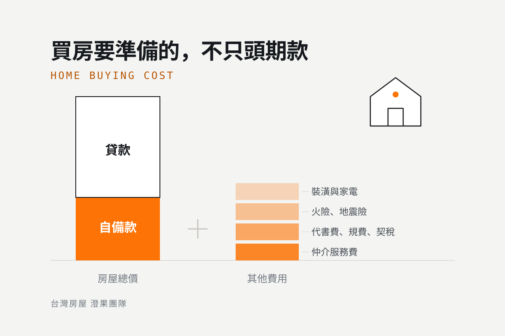
用內政部實價登錄近半年成交價，換算高雄鼓山美術館特區、農十六特區、左營瑞豐巨蛋與三民中都重劃區的三房總價與自備款區間，並列出頭期款之外常被忽略的費用。
閱讀全文 →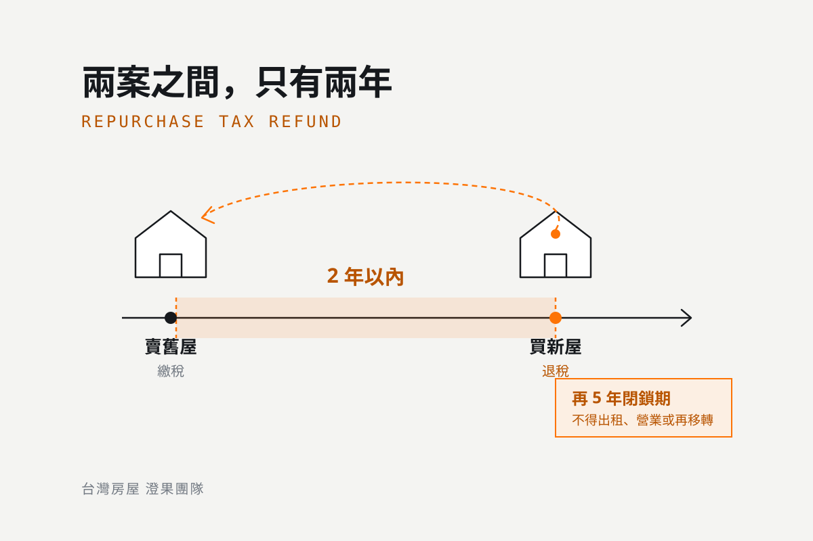
房地合一稅重購退稅的條件、退還比例計算方式、先買後賣與先賣後買的差別，以及最容易被忽略的 5 年閉鎖期限制。附自住滿 6 年優惠的比較。
閱讀全文 →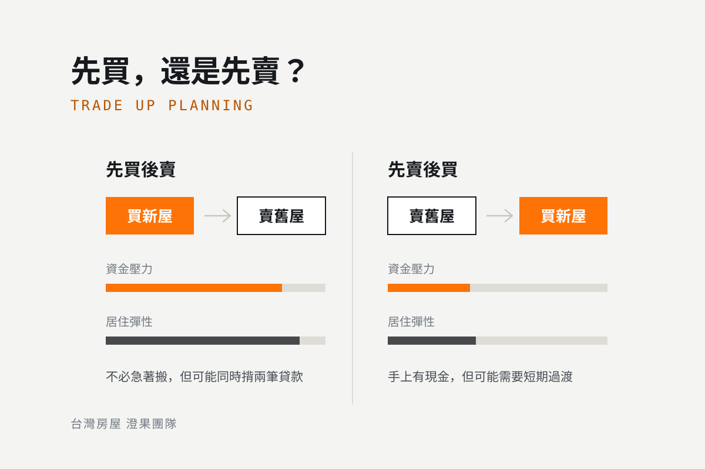
先買後賣與先賣後買的現金流缺口、過渡期成本、議價立場差異，以及重購退稅 2 年與自住優惠 6 年這兩個關鍵時間限制怎麼影響決策。
閱讀全文 →同在鼓山區、同樣鎖定家庭客的兩大生活圈，每坪價差不小。美術館特區重生活品質、農十六重生活機能，從綠地環境、產品條件到學區劃分與總量管制逐項比較。
閱讀全文 →三民區中都重劃區緊鄰愛河與中都濕地公園，是四大生活圈中總價門檻相對親民、又能兼顧市區距離與重劃區條件的一區。從先天條件、機能現況到適合進場的族群，用實價登錄資料分析。
閱讀全文 →